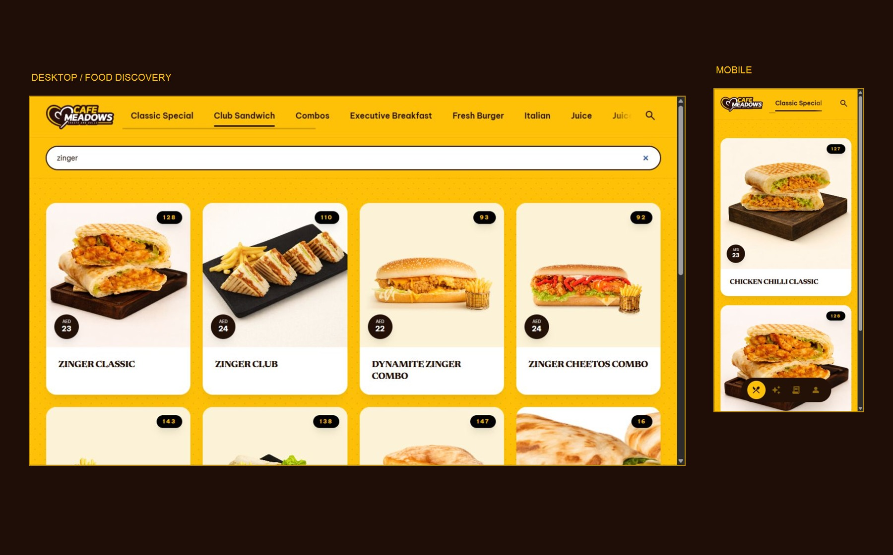
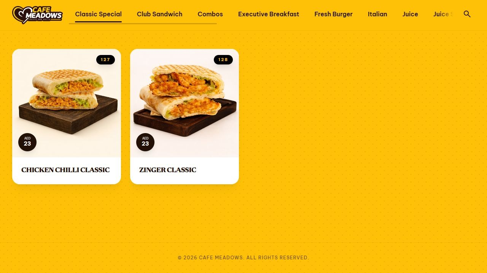
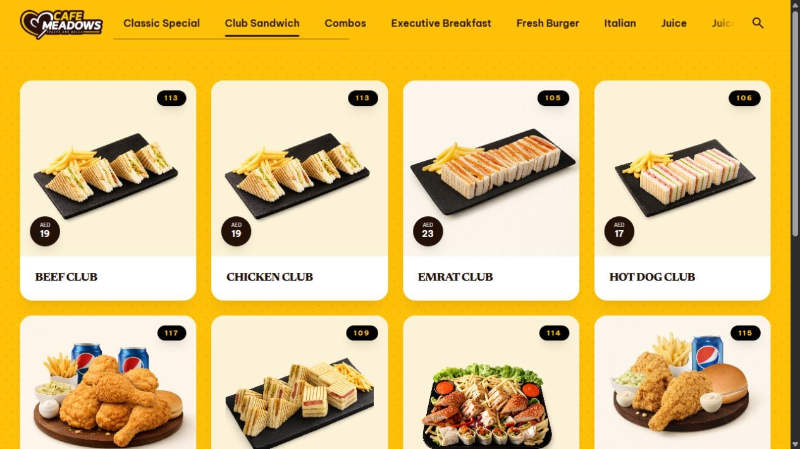
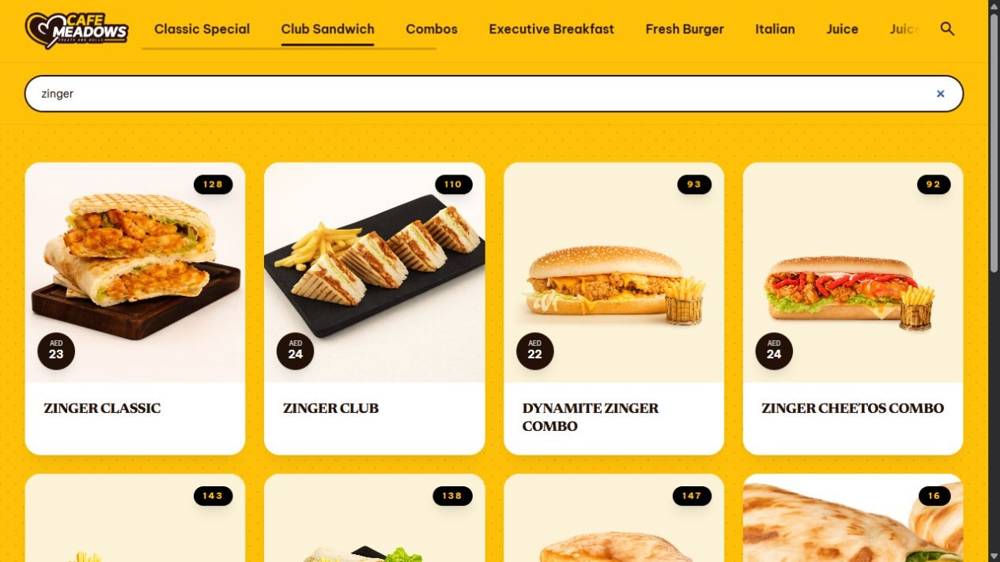
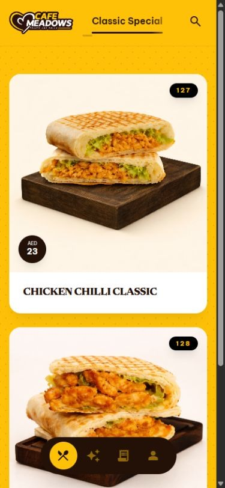
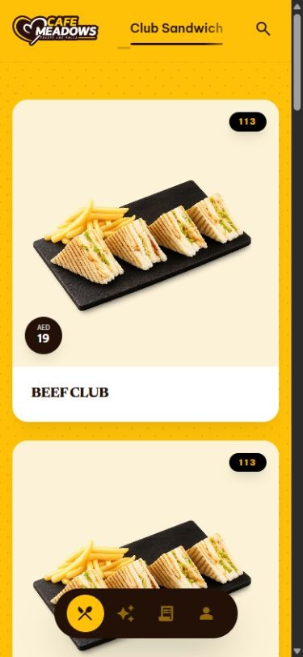

Discuss
Understand the brief, drive-through use and the way orders reach the kitchen.
DESIGN & DEVELOPMENT / DIGITAL MENU / 2026
A digital menu that reflects the café’s identity, helps customers explore the food, and fits the way its team takes and prepares orders.

MY CONTRIBUTIONUI/UX design & development
DELIVERY TIMELINEThree days · Discussion to production
PRODUCT SCOPEDrive-through digital menu
01 / THE BRIEF
The client wanted a menu that reflected Cafe Meadows’ aesthetic and worked specifically for the drive-through. Customers needed a way to browse the food before telling a waiter what they wanted.
The task was to support that existing service model. Ordering remained a conversation with the waiter; a cart and online payment were outside the brief.
02 / THE DIRECTION
I designed and developed a visual menu with food photography, category browsing, search and item codes. The project moved from discussion through design and development into production in three days.
Understand the brief, drive-through use and the way orders reach the kitchen.
Translate the café’s identity into the menu layout, food cards and navigation.
Build the web experience and take the menu into production.
03 / THE SERVICE JOURNEY
Food photographs lead the menu. Categories organise the range, while search brings matching dishes into view. Each card carries the item’s name, price and code.
The item code helps the waiter communicate the selection to the kitchen. The digital menu supports the handoff while the team continues to take orders directly.
This flow describes the project’s intended service workflow. It is not a claim of measured time savings or fewer ordering errors.
04 / THE VISUAL IDENTITY
Mustard yellow gives the menu its recognisable backdrop. Espresso brown anchors text and controls; warm cream lets the food photography stand out. These colours also shape this case study’s actions, labels, borders and cards.
Newsreader gives dish names their character. Be Vietnam Pro supports category navigation, labels and interface details.
Expressive food names. Clear menu navigation.05 / THE DESIGN DECISIONS
Large photographs are the first point of recognition. Dish names, prices and item codes stay with the image so the relevant details can be read together.
Categories support exploring a section of the menu. Search offers another route when a customer has a dish in mind.
Item codes support communication between the waiter and kitchen. The code sits on the card alongside the food it identifies.
The menu does not introduce a checkout. It gives customers something to browse and discuss while the waiter continues to manage the order.
06 / THE INTERFACE
The desktop layout presents a wider range at once. Mobile stacks the food cards vertically while keeping the café’s colour, typography and item details consistent.



A vertical layout keeps the photo, name, price and code together. Customers can move between categories and continue browsing on their phone.


Screens are original website captures retained from the project. Menu items, prices and codes shown reflect those captures and may change on the live menu.
07 / CLIENT FEEDBACK & OUTCOME
Client feedback called for an editing workflow that felt familiar and less technical. Google Sheets became the source for menu content, allowing the team to work with items, prices and codes in a spreadsheet.
Maintain dish details, prices and item codes.
Use a familiar spreadsheet to manage the menu data.
Present that menu information in the branded interface.
The result connects customer browsing, the waiter-to-kitchen handoff and the team’s menu updates. A useful next evaluation would examine how customers find a dish and how comfortably staff maintain the sheet.
The three-day delivery and service workflow are confirmed project details. No formal usability study or measured business impact is claimed here. The workflow diagram explains the content flow; it is not a screenshot of the client’s spreadsheet.
08 / EXPLORE THE WORK